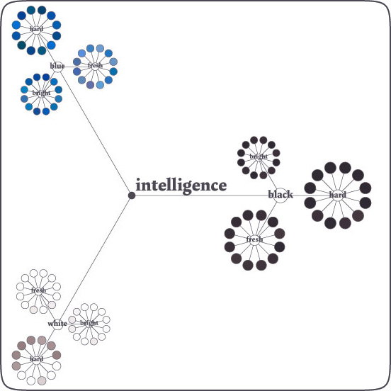
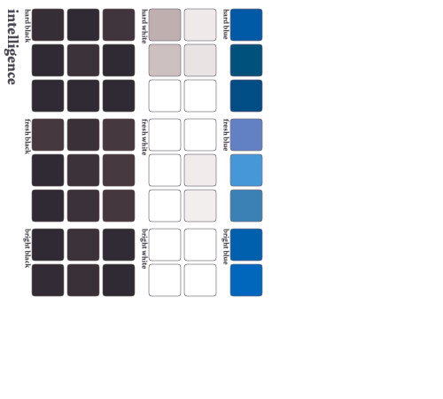

Prism
Examples: 1 2 3 4 5 6 7 8 9 10 11 12 13
The colors algorithm (workname Prism) matches a color palette to any given subject. It retrieves colors for apple (which would result in soft greens, yellows and reds) with the same ease as retrieving colors for jealousy (which would result in bright yellows and sickly greens). Because Prism is a computer program, it makes no difference between both concepts: the two of them are just words it runs through its filters. It doesn't even understand the words. This works entirely different with humans: humans know apples are green and red, obviously, because we can see them. More importantly, we have bound apples to countless of well-known associations like Snowwhite and Little-Red-Ridinghood, or nature.

Stupid intelligence
We tend to rule out the less obvious options, like yellow apples. A computer program has no direct knowledge of Snowwhite, or that the fairytale is related to apples - therefore it tends to think out of the box, examining all possible options with equal interest. Pink apples have an equal chance of winning than do green apples. This often results in illogical results, like a pink panther instead of a black panther. Color theory is however not rocket science, but a connotative process of binding the right colors to all concepts that surround a given subject, not just the object by itself. Therefore, illogical results are allowed, and can be viewed as creative solutions. A computer program coming up with a panther being pink is actually picking up on the memes and trying to be creative and witty, which is a positive side-effect.
Google as a commonsense knowledgebase
Prism has no fixed database of words linked to colors, but rather uses the internet as its data mine. It builds on Google (using the NodeBox code package with the same name) and regards the internet as an infinite database of fuzzy and subjective knowledge, filled with information that is very hard to grasp for any computer algorithm. Prism doesn't actually understand what it's doing when it cross-indexes green to apple on the internet - again, these are just words. Rather, it puts its trust in the collective effort of millions of people around the world all filling the internet with data. It is my assumption that any large or infinite system of data tends to evolve to natural order and entropy. Bluntly stated: there will likely be more webpage texts on the internet that contain the words green and apple close together, than there will be webpages with the words pink and apple close together. Therefore, humans most likely think of apples being green. Therefore, Prism assumes that apples must be green.
Language to hsb values
A second problem Prism tackles is the question of exactly what shade of a color to apply. There is dark green, and there is light green. For this, Prism has a language to HSB library called Shades that matches formal parameters like dark and bright to hue/saturation/brightness color values.
Blooming diagrams
The prism codeset has two visualisation modes: one fancy (see above) and one useful. The fancy one blooms like flowers, the useful one simply dumps a color palette.

Examples: 1 2 3 4 5 6 7 8 9 10 11 12 13
The Prism documentation is here.
Created by Tom De Smedt and Frederik De Bleser